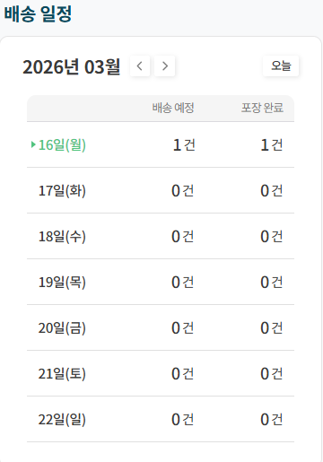
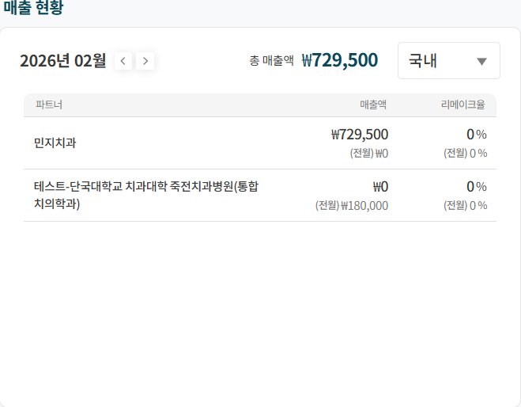
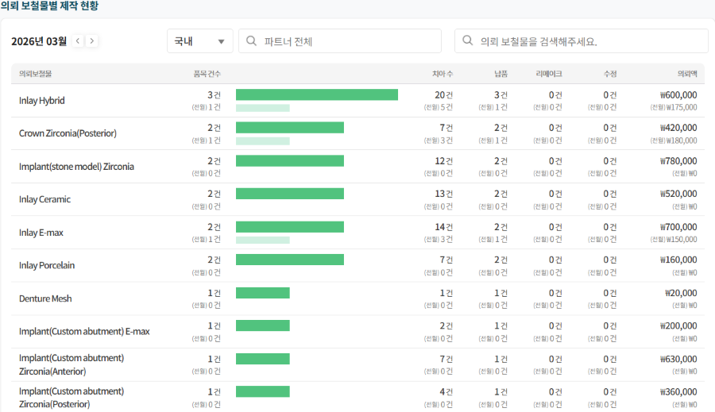

1.대시보드
이 화면은 덴트리온 솔루션 로그인 시 진입하는 초기 화면으로 의뢰한 보철물의 전체 거래 현황을 한눈에 확인할 수 있습니다.
1-1.배송일정
완료 요청일을 기준으로 의뢰서 총 건수와 포장 완료된 의뢰 건수를 주 단위로 확인할 수 있습니다.

1. [배송 예정] : 완료 요청일을 기준으로, 배송 되어야 하는 전체 의뢰 보철물 건수입니다.
2. [포장 완료] : 완료 요청일을 기준으로, 배송 되어야 하는 의뢰 중 포장 완료된 건수입니다.
3. [오늘] : 클릭 시 접속일로 자동으로 이동합니다.
4. [주간] : 월요일부터 일요일까지 1주 단위로 확인할 수 있으며, 양쪽 화살표를 이용해 지난 일정이나 예정된 일정을 확인할 수 있습니다.
1-2.매출현황
해당 월에 확정된 매출을 파트너별로 실시간 확인할 수 있습니다.

1. [파트너] : 조회된 월에 매출 확정된 파트너를 확인할 수 있습니다.
2. [매출액] : 조회된 월에 매출 확정된 파트너의 매출액을 확인할 수 있습니다.
3. [리메이크율] : 파트너별로 리메이크 의뢰 평균 비율값입니다.
4. [전월 대비] : 선택한 월과 전월 데이터를 비교하여 증감량을 확인할 수 있습니다.
5. [총 매출액] : 조회된 월에 매출 확정된 모든 파트너의 총 매출액을 확인할 수 있습니다.
6. [지역 정보] : 국내/해외 구분하여 매출 현황을 확인할 수 있습니다.
7. [월 전환] : 월 전환 기능을 통해 각 월의 매출 현황을 확인할 수 있습니다.
1-3.의뢰 보철물별 제작 현황
조회된 월에 전체 파트너의 의뢰 보철물별 제작 현황을 확인할 수 있습니다.

1. [의뢰 보철물] : 조회된 월에 제작 중 또는 제작 완료의 보철물 목록을 확인할 수 있습니다.
2. [품목 건수] : 제작 중 또는 제작 완료된 보철물 별 의뢰 건수를 확인할 수 있습니다.
3. [치아수] : 의뢰 당 보철물 치식의 수를 확인할 수 있습니다.
4. [납품] : 의뢰 보철물 별로 리메이크 제작한 의뢰 건수를 확인할 수 있습니다.
5. [리메이크] : 의뢰 보철물 별로 리메이크 제작한 의뢰 건수를 확인할 수 있습니다.
6. [수정] : 의뢰 보철물 별로 수정 제작한 의뢰 건수를 확인할 수 있습니다.
7. [의뢰액] : 의뢰 보철물 별로 매출을 확인할 수 있습니다.
8. [전월 대비] : 선택한 월과 전월 데이터를 비교하여 증감량을 확인할 수 있습니다.
9. [지역 정보] : 국내/해외 구분하여 매출 현황을 확인할 수 있습니다.
10. [파트너 검색] : 특정 파트너만 선택하여 의뢰 보철물 제작 현황을 확인할 수 있습니다.
11. [의뢰 보철물 검색] : 특정 의뢰 보철물만 선택하여 제작 현황을 확인할 수 있습니다.
1-4.메뉴
서비스의 주요 기능으로 이동할 수 있으며, 원하는 메뉴 클릭 시 해당 기능의 화면으로 진입합니다.